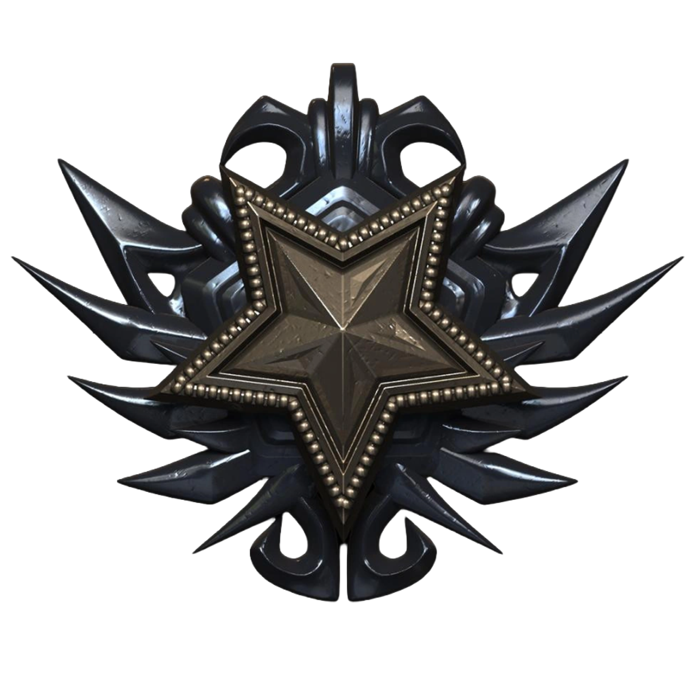

Organização brasileira de Gears of War. Competição, conteúdo e comunidade sob uma única bandeira — construída na linha de frente, jogo após jogo.
O nome vem de Nassar Embry, o Allfather Prime que uniu a Coalizão em um dos momentos mais críticos da história de Sera. Seu legado deu origem à Embry Star — a mais alta honraria que um soldado da COG pode receber, concedida apenas para quem age com bravura muito além do que o dever exige.
É esse o padrão que a organização carrega no nome: liderança, união e a exigência de ir além do esperado. Cada jogador, criador e membro da EMBRY representa esse mesmo compromisso — competir com a mentalidade de quem busca a mais alta honra, dentro e fora de campo.

No universo da franquia de jogos Gears of War, a Estrela Embry (Embry Star) é a maior condecoração militar que um soldado da Coalition of Ordered Governments (COG) pode receber
Competição, highlights e comunidade. Conheça quem representa a EMBRY dentro e fora de campo.
Players que contribuem para o conteúdo oficial da EMBRY através de clips, highlights, plays e montages.
Acompanhe as jogadas, os bastidores e o canal oficial da organização.
Cyberz — Uma história construída na comunidade de Gears. Antes de ser conhecido como Cyberz, havia a vontade de competir, evoluir e deixar sua marca em Gears.
Assistir agora →A Embry foi fundada em 04/07/2013, com a ideia de ser um pequeno grupo de amigos reunidos para jogar Gears of War e compartilhar a paixão pelo jogo.
Assistir agora →